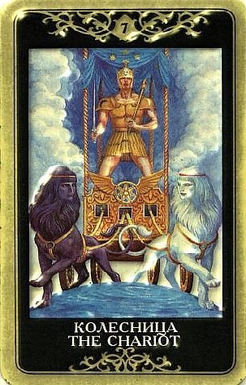

Карта знаменует смелость, уверенность, жажду нового.
В профессиональной сфере — новую работу, должность, возможно, свое дело. Карта — символ достижений благодаря собственным усилиям, благодаря уверенности в себе и, в меньшей мере, благодаря поддержке судьбы.
Человек, который изображен на колеснице, победитель.
В личных делах карта указывает на новые знакомства, на «свежую струю».
Колесница в ситуативном гадании может указывать на путешествие сухопутное (поезд, машина, автобус), на само транспортное средство и все что с ним связано.
Прямая и хорошая карта — динамика в развитии какой либо загаданной ситуации.

Когда выпадает Седьмой Аркан, все меняется семимильными шагами.
По этой карте происходит огромный скачок вперед, преодоление препятствий, уверенный прорыв. По ней открывается второе и третье дыхание на любой дистанции.
По Колеснице мы можем решиться на то, о чем и думать боялись, совершить гигантские прорывы в работе и в личной жизни.
Все враги повержены, все намерения осуществляются, ничто не стоит на пути к успеху.
Если вопрошающего угнетает какая-то проблема, выпавшая в раскладе Колесница говорит, что первый шаг к освобождению и решению этой ситуации уже сделан.
Она может также указывать, что нечто знакомое и привычное осталось позади, теперь человек преисполнен решимости и смелости, и готов вступить в новый этап жизни, открыть для себя новый мир.
Того, кому выпала Колесница, обычно переполняет энергия, воодушевление, стремление к действию, тяга к чему-то новому. Она очень любит тех, кто взялся за какое-то незнакомое дело.
Это карта силы, активности и оптимизма.
Человек, которому явилась Колесница, зачастую только что сделал свой выбор (предыдущий Аркан) и теперь устремлен к своей цели.
Больше всего ему сейчас нужны самодисциплина и уверенность в собственных намерениях.
Эта карта говорит, что на ожидания времени не осталось.
Настал момент решения проблем, особенно тех, что уже долгое время осложняют жизнь.
Традиционные значения этой карты: война, битва, возмездие, победа над противником или конкурентами, успех, триумф, преодоление препятствий, помощь в трудности.
Победа над ударами судьбы, возможность выйти победителем из сложного положения.
Успех, достигаемый по Колеснице, является результатом сознательных усилий, а не просто стечения обстоятельств.
Аркан Колесница издревле считается особым знаком судьбы.
Он приобретает особенную важность, выпадая в раскладе на кажущееся безнадежным дело.
Колесница символизирует переход из одного состояния в другое.
Если предшествующий период времени заставлял «тормозить» или топтаться на месте, то появление Колесницы весть радостная. Оно означает, что стагнация заканчивается и жизнь наполняется новой силой, причем это будут не фантазий и вдохновенный импульсы, а реальные продуманные планы и энергичные практические действия. Эта карта может сообщать, что вскоре в его жизни произойдет какое-то событие, способное поднять на новую ступень успеха.
Колесница говорит о начале важного этапа в жизни и совершенствовании собственного Я. Можно идти на риск, браться за новые начинания и настраиваться на жизнь с разнообразными приключениями. Подобно Семерке Жезлов, она говорит об активном преодолении препятствий.
В качестве прогноза на будущее, Колесница обычно говорит о том, что события будут развиваться и поставленная цель будет достигнута. Как и какой ценой – подскажут окружающие карты. Иногда они же подсказывают, что затрудняет продвижение.
Колесница всегда говорит о важности предпринимать правильное усилие в правильный момент времени.
Действия должны быть выверены, иначе велик риск, что вся затея обернется провалом.
Колесница - карта не вполне безобидная, в ней в неявном виде всегда присутствует риск, что она потеряет равновесие и управление, и тогда перевернется. Поэтому есть смысл обращать самое пристальное внимание на соседние карты. Но издавна она считалась указателем того, что человек на правильном пути.
Колесница нередко выпадает человеку, который считает пройденым какой-то этап своей жизни и готов двигаться дальше.
Это тот случай, когда прошлое оставляют позади без сожалений и без оглядки.
Колесница означает значительный рывок вперед.
Она показывает, что мы вырвались из круга прежних интересов и пошли новым путем.
Движут этим стремление к свободе, честолюбие, поиск утраченного или просто жажда самореализации.
Карта символизирует силу и ловкость (управление Колесницей), но также и неопытность (путешествие в неведомые края). Поэтому ее следует воспринимать и как предостережение - не переоценивай свои силы, не будь слишком самоуверен и не допускай "головокружения от успехов". Лучше всего вовремя осознать, насколько многому еще предстоит научиться.
Путешествие, дальняя поездка, смена привычной обстановки. Общение с кем-то, кто находится на большом расстоянии.
В окружении неблагоприятных Арканов может предвещать ссоры, скандалы, конфликты, наличие каких-то противоборствующих факторов. Старинное значение – война.
ЛИЧНЫЕ ОТНОШЕНИЯ
Очень неоднозначная карта.
Сам по себе Колесничий – порядочный индивидуалист, и его путь в чувственные пучины обычно не заводит.
Выпадая одинокому человеку, Седьмой Аркан может говорить о том, что сейчас не лучшее время для создания отношений, судьба ждет другого – саморазвития, укрепления позиций, расширения знаний и сфер влияния, вообще решения жизненных задач иного плана.
Это совет сконцентрироваться на своем собственном пути и обозначить на нем какие-то достижения!
Это карта большой силы личности, контроля над собой и управления своей жизнью благодаря силе воли.
У человека Колесницы есть цель, и он действует в согласии с ней, но связана ли эта цель с отношениями – это еще вопрос.
Может быть, его мотивирует что-то другое. Подсказку могут дать окружающие карты.
В окружении соответствующих карт, Колесница может предвещать и любовное приключение (особенно дорожный или курортный роман), и переезд на новую квартиру.
В то же время в раскладе человека, которого волнуют проблемы уже существующих отношений, Колесница может говорить именно о паре.
В этом случае она акцентирует вопросы власти и контроля над жизнью. При наличии благоприятных карт, Колеcница помогает сгладить спорные вопросы, избавиться от противоречий в паре и, так сказать, придает новое ускорение делам и событиям.
В благоприятном окружении это может быть полная гармония и взаимопонимание в паре, честность и искренность, ориентация на взаимные цели, но если в раскладе все не так радужно, то это могут быть ссоры, конфликты, попытки каждого «тянуть одеяло на себя».
Иногда по этому Аркану просматривается и желание уйти.
И тут, в общем, следует заметить, что по Колеснице можно вырваться из пут самых безнадежных и гнетущих отношений. Эта карта может говорить о том, что первые шаги в этом направлении уже сделаны, и дальнейших ничто не остановит. Колесничий готов рисковать не меньше Шута, уверен в своем пути не меньше Отшельника и воля у него не слабее, чем у Императора.
Одно из значений карты – уход из ситуации, причем это не трусливое бегство и не попытка скрыться от реальности, а именно уход.
В то же время Колесничий – олицетворение сексуальной силы, и энергия этой карты многими ощущается как весьма бурная и яркая.
Если рядом карты вроде Башни, Рыцаря Мечей и Дьявола, вопрос сексуальной безопасности может встать ребром. О чем бы ни шла речь, человек, описываемый такой комбинацией карт, «пройдет по трупам» и добьется своего любой ценой.
Колесничему и без того присущи сильная самомотивация и упрямство. В любви он склонен покорять, безотносительно заинтересованности второй стороны (а так же родителей, жен, мужей и детей). Это танк. Конфликт интересов его не пугает, при этом он ни к кому не прислушивается и ликвидирует соперников. Колесница отмечает побеждающую сторону в любовном треугольнике.
В современных трактовках практически выпадает значение боевого триумфа, которое издавна приписывалось Колеснице, но иногда оно дает себя знать.
Современные тарологи указывают, что Колесница может быть индикатором виртуального романа или отношений между людьми, живущими на большом расстоянии друг от друга.